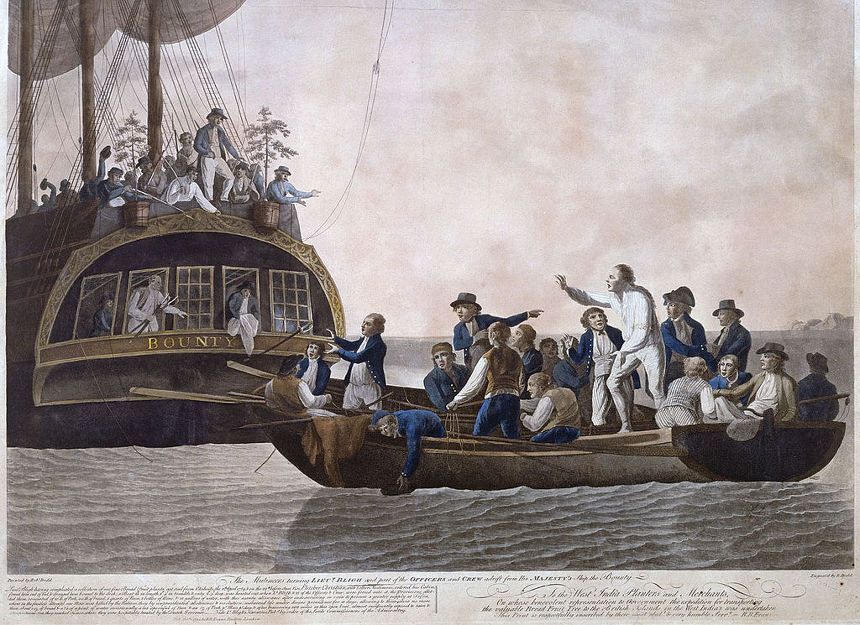
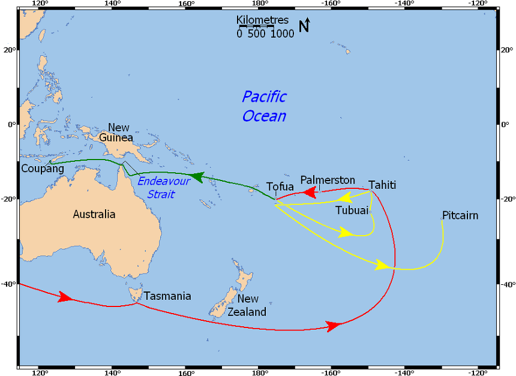

나폴레옹 시대 영국 전함의 전투 광경 - Lieutenant Hornblower 중에서 (5)
게시: 2019-03-11T06:30:00+09:00
"조수가 아직 차오르고 있습니다." 혼블로워가 말했다. "만조 때까지는 아직 1시간이 남았어요. 다만 우리가 아주 단단히 좌초된 것 같아서 걱정이네요."
부시는 그저 그를 쳐다보고 혼자 욕을 하는 것 외에는 할 수 있는 일이 없었다. 그렇게 입으로라도 더러운 욕지거리를 내뱉어야 그의 과도한 스트레스가 다소라도 풀릴 것 같았다.
"거기 침착하게 해, 더프 !" 혼블로워가 시선을 그로부터 돌려 대포 주변에 모인 함포 조원들을 바라보며 소리 질렀다. "밀대질을 제대로 해야지 ! (Swab that out properly !) 장전할 때 두 손을 날려먹고 싶은 거야 ?" (당시 대포에 장약을 장전하기 전에 물에 적신 헝겊뭉치가 달린 장전봉으로 밀대질을 하는 이유는 2가지였습니다. 하나는 이전에 쏜 장약의 캔버스 천과 화약 찌꺼기를 닦아내는 것이었고, 두번째는 뜨거워진 대포를 식히는 것이었습니다. 만약 물이 없어서 밀대질로 대포를 식히지 못한다면 다음 장약을 밀어넣을 때 지나치게 뜨거운 포신에 장약이 폭발을 일으킬 수 있었습니다. 따라서 당시 대포에는 포탄 못지 않게 물이 가득 든 물통도 발포에 필수적인 부품이었습니다. : 역주)
혼블로워가 다시 부시에게 시선을 돌렸을 때 부시는 자제력을 되찾은 상태였다.
"만조 때까지 1시간이라고 했나 ?" 그가 물었다.
"예, 부관님. 카베리(Carberry : 동료 장교입니다 : 역주)의 계산에 따르면 그렇습니다."
"맙소사." (God help us. 이건 신이여 우릴 도우소서 라는 기도라기 보다는, 뭔가에 대해 부정적인 반응을 보일 때 쓰는 표현입니다. 부시는 앞으로 1시간 정도 꼼짝 못하고 일방적인 포격을 당해야 한다는 생각에 이런 표현을 쓴 것입니다. : 역주)
"제 포격으로는 저 지점의 포대까지 간신히 닿는 정도입니다. 저 대포들을 무력화시킬 수는 없다고 하더라도, 저 총안(embrasure : 성곽이나 성벽에 총이나 활, 대포를 쏘기 위해 뚫어놓은 구멍 : 역주)들을 포화로 위협한다면 최소한 저들의 포격 속도는 떨어뜨릴 수 있을 겁니다."
포탄이 명중했는지 또 우지끈 소리가 들리더니, 다시 한번 우지끈 소리가 들렸다.
"하지만 저 수로 너머의 요새는 아예 사정거리 밖인데."
"맞습니다." 혼블로워가 말했다.
화약 보이들은 이 난리통 속에 대포 장약을 들고 이리저리 뛰어다녔다. 그 속을 뚫고 걸어오는 전령 역할의 사관후보생이 하나 있었다.
"미스터 부시, 부관님 ! 미스터 버클랜드에게 보고를 해주시겠습니까 ? 그리고 우리는 좌초한 상태에서 포격을 받고 있습니다, 부관님."
"닥치게. 미스터 혼블로워, 자네에게 여기 지휘를 맡기겠네."
"예, 부관님."
어둠 속에 있다가 맞이한 선미갑판에서의 햇빛은 눈이 부셔서 앞이 안 보일 지경이었다. 버클랜드는 난간 근처에 모자도 없이 서있었는데, 자신의 모습을 추스르려 안간힘을 쓰고 있는 듯 했다. 칸막이 목재에 깊이 박힌 시뻘건 쇳덩어리에 누군가 펌프에서 나오는 호스의 물을 끼얹자 한줄기의 증기가 쐐액하고 내뿜어졌다. 갑판 배수구에는 사망자들이 쓰러져 있었고, 부상자들은 실려 내려가고 있었다. 아마도 포탄 또는 그 포탄으로 흩뿌려진 나무 파편들이 조타수들을 덮쳤고, 그로 인해 잠시 방향 조절이 안되어 좌초해버린 모양이었다.
"우리 닻줄을 잡아당겨 이 상황에서 벗어나야겠어." (We have to kedge off,) 버클랜드가 말했다.
"예, 함장님."
그 말의 뜻은 닻을 던진 뒤 캡스턴(capstan : 주갑판 가운데 있는 큰 원통형 릴 같은 것으로서, 닻줄을 감을 때 사용합니다 : 역주)으로 닻줄을 감아 당김으로써 뻘에 얹힌 배를 힘으로 빼내겠다는 뜻이었다. 부시는 하갑판의 제한된 시야로 내다보고 짐작한 배의 위치가 실제로 맞는지를 확인하기 위해 주위를 둘러보았다. 배의 이물이 뻘 속에 박혀 있었으므로, 배를 빼내려면 고물에서부터 빼내야 했다. 바로 머리 위로 포탄 하나가 휭 지나가는 바람에, 부시는 놀라 펄쩍 뛰지 않으려 안간힘을 써야 했다.
"고물 포문으로부터 닻줄을 뒤로 빼야 할 걸세."
"예, 함장님."
"로버츠가 스트림 닻(A stream anchor : 조수 흐름 속에서 배를 고정시킬 때 사용하는 약간 큰 닻 : 역주)을 론치 보트(launch : 큰 범선에 실린 여러 보트 중 가장 큰 보트. 아래 PS1 참조 : 역주)에 싣고 가서 던질 걸세."
"예, 함장님."
버클랜드가 형식적인 '미스터'를 빼먹었다는 것은 상황의 급박함과 함께 그가 겪고 있는 스트레스를 그대로 보여주는 일이었다.
"제가 담당하는 함포 조원들을 데리고 가겠습니다, 함장님." 부시가 말했다.
"그러게."
이제는 규율과 훈련이 진가를 발휘할 때였다. 리나운 호는 절반 이상의 수병들이 브레스트(Brest : 프랑스의 주요 군항입니다 : 역주) 봉쇄 활동 기간 중 잘 훈련된 경험있는 수병들이라는 점에서 매우 운이 좋은 전함이었다. 플리머스(Plymouth : 영국 해군 기지 항구 : 역주)에서 출발할 때는 강제 징집된(pressed) 장정들로 정원을 채웠었다. 리나운 호가 해협 함대(the Channel Fleet, 영불 해협을 지키던 함대로서 당시 로열 네이비에서 가장 큰 규모의 함대였습니다 : 역주)의 일원이었을 때는 그저 훈련이었던 것이, 이제는 함대의 다른 배들과 경쟁하며 형식적으로 수행하는 것이 아니라 전함의 생사를 결정지을 작업이 되었다. 부시는 그의 함포 조원들을 불러 모으고 닻줄을 선창에서 꺼내어 고물의 포문을 통해 내려보내는 작업을 시작했다. 그러는 동안 머리 위 갑판에서는 로버츠의 부하들이 론치 보트를 내려 보내기 위해 견인줄과 활대에 달라 붙었다.
PS1. 당시 전함은 여러 종류의 크고 작은 보트를 싣고 다녔습니다. 가령 jolly boat, gig, cutter 등 여러가지가 있었는데, 그 중 launch 보트가 가장 큰 것이었습니다. 발사한다는 뜻의 launch라는 단어에서 유래된 이름이 아니라, 스페인어 lancha(란차, 스페인어로 돛단 큰 보트를 뜻함)에서 유래된 이름이라고 합니다. 론치 보트는 대략 길이 7m 정도에 20명 정도가 탈 수 있는 대형 보트였습니다. 보통은 노를 저었지만 돛을 달고 장거리를 항해할 수도 있었습니다. 가장 극적인 사례는 1789년 벌어진 바운티(Bounty) 호의 반란 사건에서의 론치 보트였습니다. 블라이(Bligh) 함장과 그 충성파 선원 18명은 반란 선원들에 의해 론치 보트로 쫓겨나 바다에 버려졌는데, 블라이 함장의 뛰어난 항법 실력 덕분에 그들은 이 보트로 6500 km의 거리를 항해하여 인도네시아의 쿠팡(Kupang)에 도달할 수 있었습니다. 말이 쉬워서 6500 km이지, 서울에서 인도양의 몰디브 제도까지의 거리가 대략 6700km입니다. 대단하지요 ?

(바운티 호에서 론치 보트로 쫓겨나는 블라이 함장과 그의 선원들입니다.)

(지도 속에서 녹색선이 블라이 함장의 항해한 경로입니다. 블라이는 육분의 하나와 해도 몇 장만 들고 론치 보트로 항해했습니다.)
Source : https://en.wikipedia.org/wiki/Mutiny_on_the_Bounty